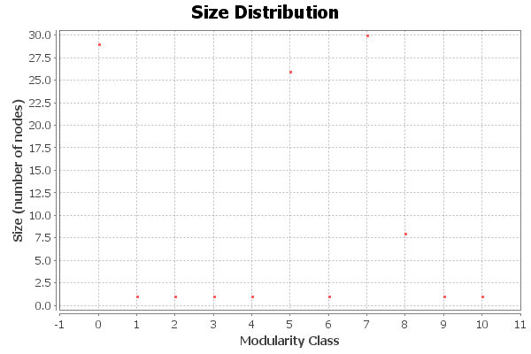

Modularity Report
Parameters:
Randomize: On
Results:
Modularity: 0.294
Number of Communities: 11

Algorithm:
Vincent D Blondel, Jean-Loup Guillaume, Renaud Lambiotte, Etienne Lefebvre, Fast unfolding of communities in large networks, in Journal of Statistical Mechanics: Theory and Experiment 2008 (10), P1000